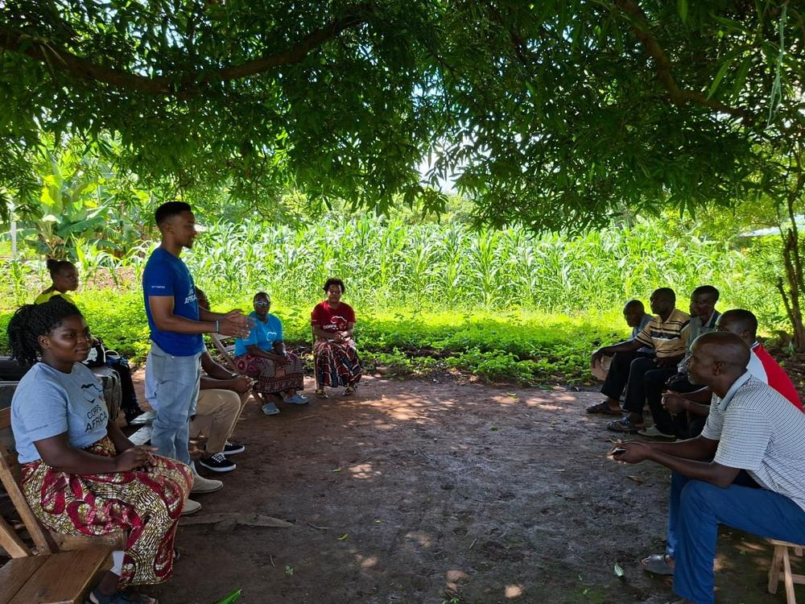
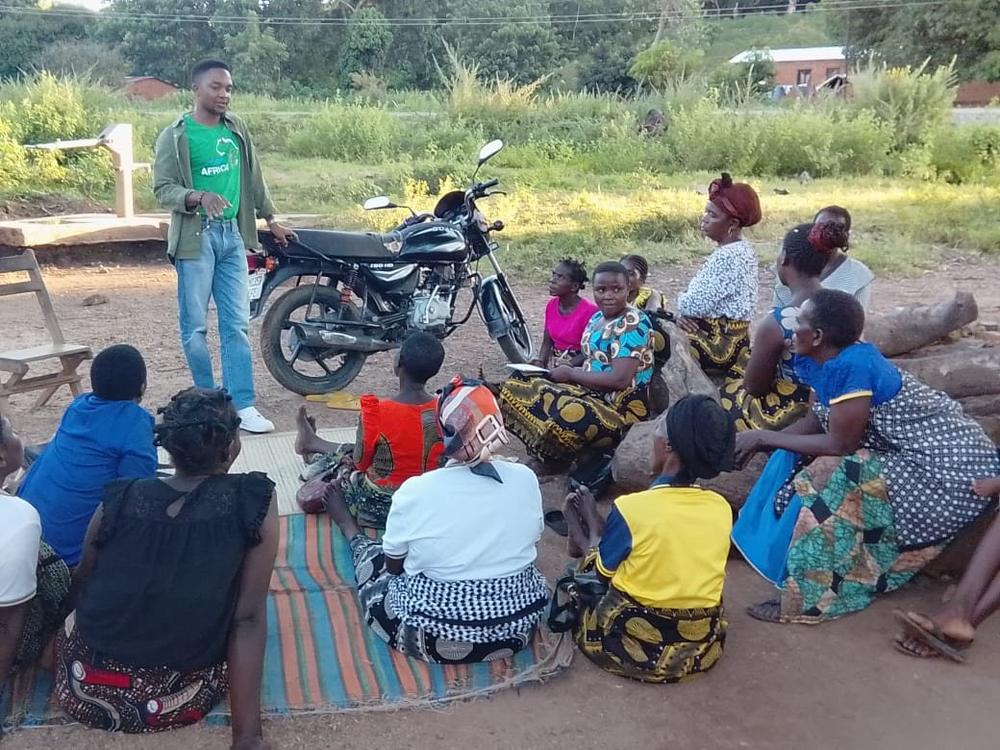
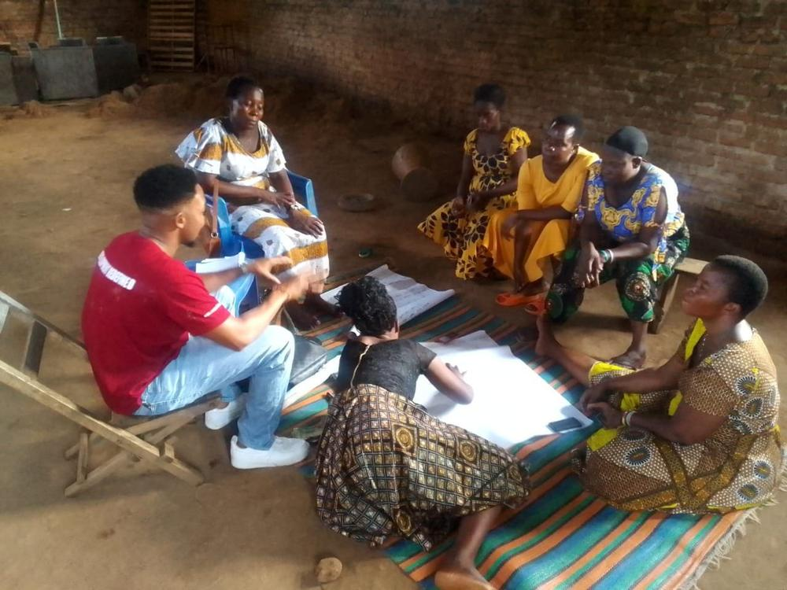
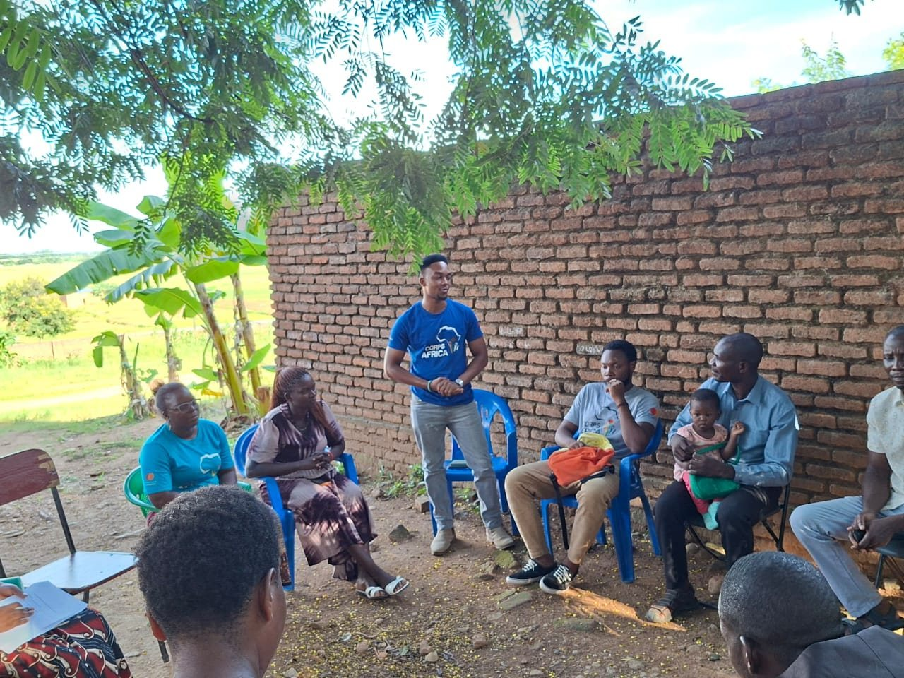
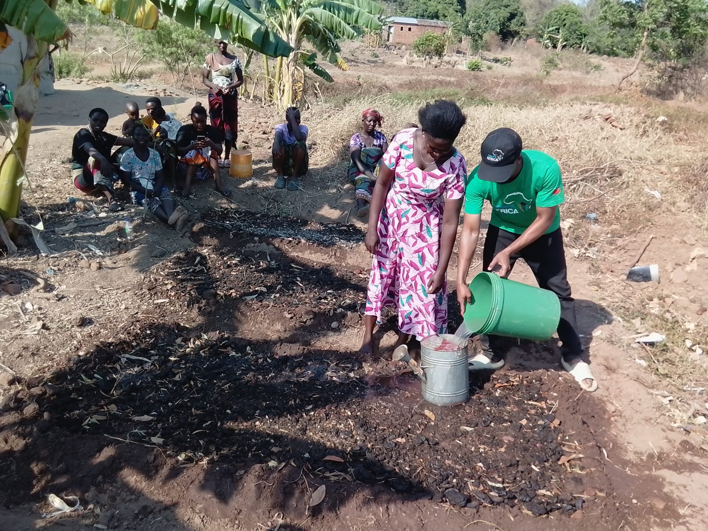
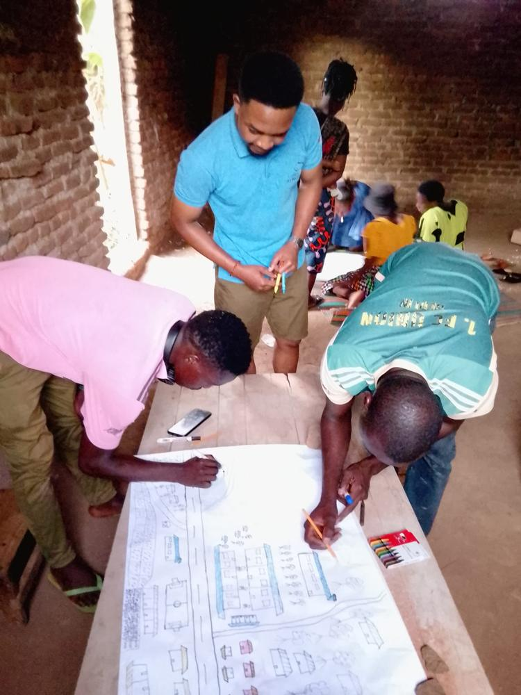
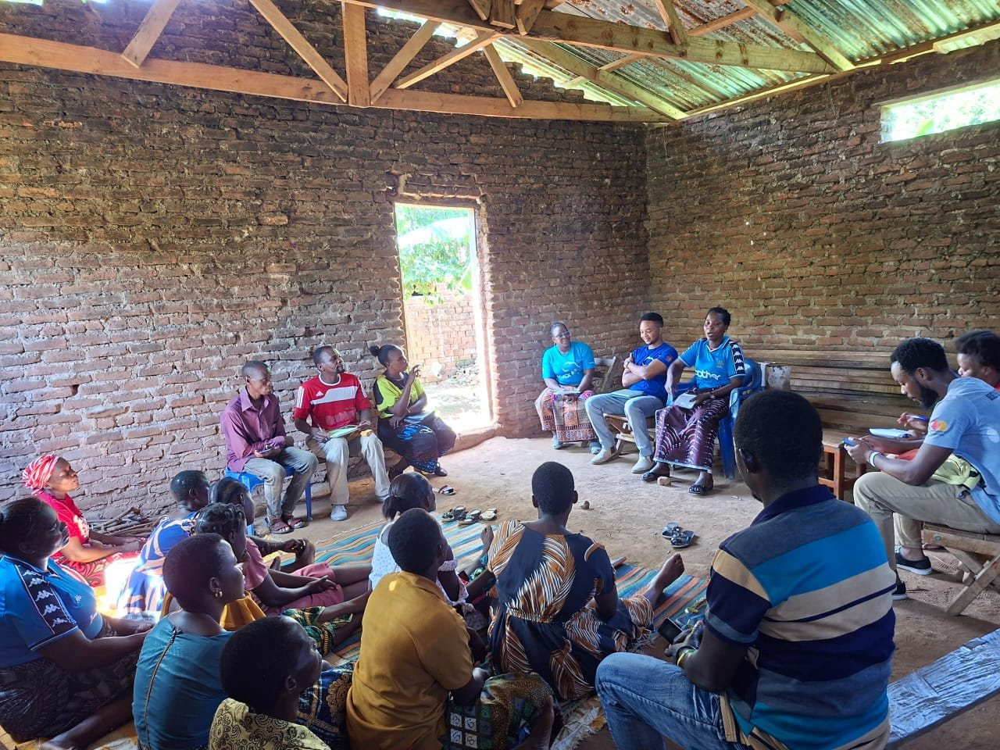
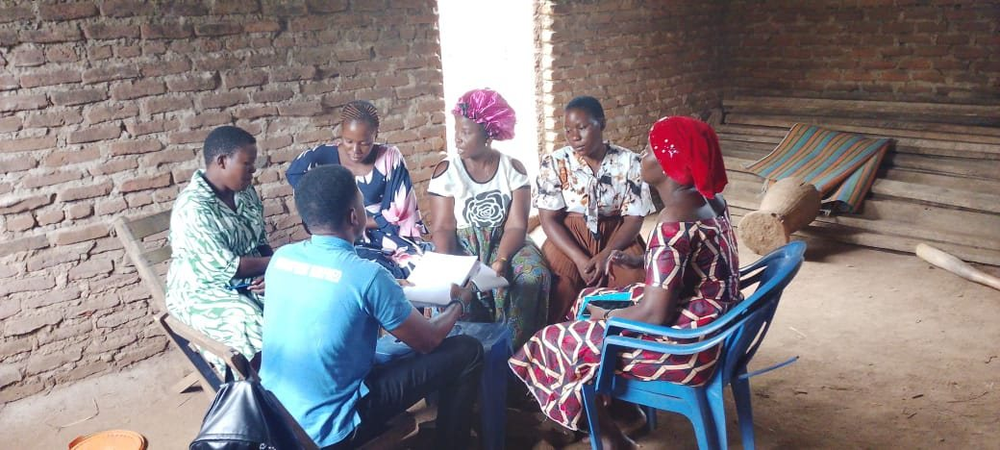

Trainings people could use the next day, and results I could measure
I designed and facilitated hands-on trainings for five community groups and a primary school. Technical sessions such as poultry health were run with specialists I brought in, including the veterinary and extension officers.








What I trained people in
Business and money
Financial literacy, entrepreneurship, market linkages and branding, value chains, digital marketing with WhatsApp and mobile money
Farming, food and trades
Kitchen gardens, climate-smart farming, post-harvest handling, poultry and goat care, value addition, carpentry
Leadership and projects
Group dynamics and leadership, proposal writing and budgeting, project management and community-led M&E
Life skills and health
Life skills and goal setting, nutrition, cholera and breast cancer awareness, school life skills lessons
Training topics by theme
Hover a section to see how many topics. Click the legend to hide a theme.
Results
I tested what people knew before and after
Kitchen garden scores were out of 5 and are shown here as percentages so both trainings can be compared.
Average score before and after training
Hover a bar to see the exact score.
How I run a session
A short pre-test shows what people already know, so I teach the gaps.
Cassava, rice and village markets instead of textbook cases.
Demonstrations, role plays and practice budgets in every session.
A post-test, then follow-up visits to see the skills being used.